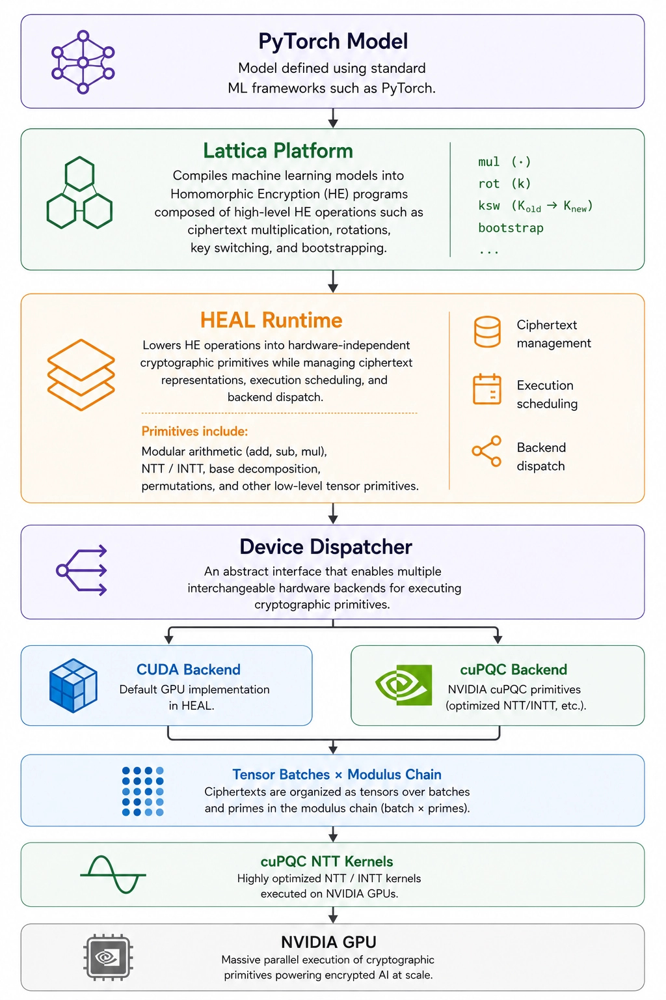

Accelerating Encrypted AI with NVIDIA cuPQC
Homomorphic Encryption (HE) enables computation directly on encrypted data, making it possible to build AI systems that process sensitive information without ever decrypting it. As encrypted AI workloads continue to grow in complexity, the computational cost of the underlying cryptographic operations has become one of the primary challenges to practical deployment.
NVIDIA cuPQC addresses this challenge by providing highly optimized GPU implementations of core cryptographic primitives that form the foundation of modern Homomorphic Encryption schemes. Rather than accelerating complete applications directly, cuPQC accelerates the low-level building blocks that account for much of encrypted execution, allowing higher software layers to transparently benefit from GPU acceleration.
In this post, we explore how GPU-accelerated cryptographic primitives fit into a modern Homomorphic Encryption software stack. Using the Lattica Platform and HEAL as the execution stack, we show how NVIDIA cuPQC accelerates the Number Theoretic Transform (NTT), where it fits within encrypted AI execution, and the performance improvements observed on real workloads.
The Homomorphic Encryption Software Stack
Although Homomorphic Encryption is often viewed as a cryptographic primitive, modern encrypted AI systems are built as layered software stacks. Machine learning models are progressively lowered through multiple abstraction layers, from neural network operations to Homomorphic Encryption operations and finally to the cryptographic primitives executed on the underlying hardware.

This separation of responsibilities allows each layer to evolve independently while maintaining a consistent programming model for encrypted AI.
Integrating NVIDIA cuPQC
One of the strengths of cuPQC is that it is designed to integrate into existing Homomorphic Encryption runtimes rather than replace them.
Modern runtimes already dispatch cryptographic primitives through hardware-specific backends. In HEAL, this abstraction is exposed through the open-source Device Dispatcher interface, allowing different hardware implementations to provide optimized versions of individual primitives while preserving a common execution model.
class DeviceDispatcher:
...
def ntt(self, *args, **kwargs):
raise NotImplementedError
def intt(self, *args, **kwargs):
raise NotImplementedError
def modmul(self, *args, **kwargs):
raise NotImplementedError
...
Because cuPQC accelerates individual primitives rather than complete encrypted applications, integrating it required implementing only the currently supported operations: the NTT and inverse NTT. Instead of developing a new backend from scratch, the cuPQC backend derives from the existing CUDA backend in HEAL and selectively overrides the NTT and inverse NTT operations.
class PytorchCuPQCDispatcher(PytorchCudaDispatcher):
def __init__(self, *args, **kwargs):
super().__init__(*args, **kwargs)
# import a compiled torch.utils.cpp_extension.CUDAExtension
self.torch_cupqc_dispatcher = ...
def ntt(self, tensor, mod_chain, twiddles):
return self.torch_cupqc_dispatcher.apply_ntt(
tensor, mod_chain, twiddles
)
def intt(self, tensor, mod_chain, twiddles_inv, n_inv):
return self.torch_cupqc_dispatcher.apply_intt(
tensor, mod_chain, twiddles_inv, n_inv
)
Everything else, including modular arithmetic, memory management, tensor layouts, execution scheduling, and higher-level Homomorphic Encryption operations, continues to use the existing default CUDA backend of HEAL, implemented by PytorchCudaDispatcher.
At runtime, once the PytorchCuPQCDispatcher receives an NTT or inverse NTT request, execution is forwarded directly to cuPQC's optimized kernels:
using namespace cupqc;
template <uint32_t N>
using ForwardNTTFor = decltype(Algorithm<algorithm::NTT>()
+ Direction<nttDirection::FORWARD>()
+ Precision<U_SINGLE_PRECISION>()
+ Size<N>()
+ Block()
+ BlockDim<1024>());
template <uint32_t N, uint32_t M>
using ForwardNTTStagedFor = decltype(Algorithm<algorithm::NTT>()
+ Direction<nttDirection::FORWARD>()
+ Precision<U_SINGLE_PRECISION>()
+ Size<N>()
+ SubSize<M>()
+ Block()
+ BlockDim<1024>());
/*
Each CUDA block executes a single NTT using cuPQC.
The grid dimensions map naturally to the tensor representation
used by the HEAL runtime, allowing thousands of independent
transforms to execute concurrently without additional scheduling logic.
*/
template <uint32_t N>
__global__ void forward_ntt_kernel(...) {
using ForwardNTT = ForwardNTTFor<N>;
int batch_idx = blockIdx.x;
int p_idx = blockIdx.y;
extern __shared__ U_SINGLE_PRECISION sdata[];
auto* poly = reinterpret_cast<U_SINGLE_PRECISION*>(&tensor[batch_idx][p_idx][0]);
auto* twds = reinterpret_cast<U_SINGLE_PRECISION*>(&twiddles[p_idx][0]);
U_SINGLE_PRECISION p = static_cast<U_SINGLE_PRECISION>(mod_chain[p_idx]);
nttConst fntt_constants(p);
ForwardNTT().load_to_mont(sdata, poly, fntt_constants);
ForwardNTT().execute(poly, twds, fntt_constants.p);
ForwardNTT().store_from_mont(sdata, poly, fntt_constants);
}
/*
A collection of CUDA blocks cooperates on a single NTT using cuPQC.
The cuPQC API for larger NTT sizes uses blockIdx.x, but the remaining
grid dimensions still map naturally to the tensor representation used
by the HEAL runtime, allowing thousands of independent transforms to
execute concurrently without additional scheduling logic.
*/
template <uint32_t N>
__global__ void forward_ntt_stage_1_kernel(...) {
using ForwardNTT = ForwardNTTStagedFor<N, 128>;
int batch_idx = blockIdx.y;
int p_idx = blockIdx.z;
extern __shared__ U_SINGLE_PRECISION sdata[];
auto* poly = reinterpret_cast<U_SINGLE_PRECISION*>(&tensor[batch_idx][p_idx][0]);
auto* twds = reinterpret_cast<U_SINGLE_PRECISION*>(&twiddles[p_idx][0]);
U_SINGLE_PRECISION p = static_cast<U_SINGLE_PRECISION>(mod_chain[p_idx]);
nttConst fntt_constants(p);
ForwardNTT().stage_1_load_to_mont(sdata, poly, blockIdx.x, fntt_constants);
ForwardNTT().stage_1_execute(sdata, twds, fntt_constants.p);
ForwardNTT().stage_1_store(sdata, poly, blockIdx.x);
}
template <uint32_t N>
__global__ void forward_ntt_stage_2_kernel(...) {
using ForwardNTT = ForwardNTTStagedFor<N, 128>;
int batch_idx = blockIdx.y;
int p_idx = blockIdx.z;
extern __shared__ U_SINGLE_PRECISION sdata[];
auto* poly = reinterpret_cast<U_SINGLE_PRECISION*>(&tensor[batch_idx][p_idx][0]);
auto* twds = reinterpret_cast<U_SINGLE_PRECISION*>(&twiddles[p_idx][0]);
U_SINGLE_PRECISION p = static_cast<U_SINGLE_PRECISION>(mod_chain[p_idx]);
nttConst fntt_constants(p);
ForwardNTT().stage_2_load(sdata, poly, blockIdx.x);
ForwardNTT().stage_2_execute(sdata, twds, fntt_constants.p);
ForwardNTT().stage_2_store_from_mont(sdata, poly, blockIdx.x, fntt_constants);
}
template <uint32_t N>
void launch_forward_ntt(torch::Tensor& tensor, ...) {
/* Uses the cuPQC-NTT single-kernel regime */
if constexpr (N <= (1U << 13)) {
using ForwardNTT = ForwardNTTFor<N>;
constexpr size_t smem = ...;
dim3 grid(tensor.size(0) /*batch*/, tensor.size(1) /*mod_chain*/);
forward_ntt_kernel<N><<<grid, ForwardNTT::BlockDim, smem>>>(...);
}
else { /* Uses the cuPQC-NTT multi-kernel regime */
using ForwardNTT = ForwardNTTStagedFor<N, 128>;
constexpr size_t smem = ...;
dim3 grid(128 /*cuPQC NTT subsize*/, tensor.size(0) /*batch*/, tensor.size(1) /*mod_chain*/);
forward_ntt_stage_1_kernel<N><<<grid, ForwardNTT::BlockDim, smem>>>(...);
forward_ntt_stage_2_kernel<N><<<grid, ForwardNTT::BlockDim, smem>>>(...);
}
}
/* Entry point for the HEAL DeviceDispatcher */
void apply_ntt(
torch::Tensor& tensor, // [batch, mod_chain, N]
const torch::Tensor& mod_chain, // [mod_chain]
const torch::Tensor& twiddles // [mod_chain, N]
) {
const auto N = tensor.size(2);
/*
The runtime selects the appropriate cuPQC specialization based on the
polynomial degree, allowing the same integration layer to support
multiple HE parameter sets without changing higher software layers.
*/
switch (N) {
case 1024: launch_forward_ntt<1024>(tensor, mod_chain, twiddles); break;
...
... // all powers of two between 2^10 and 2^16
...
case 65536: launch_forward_ntt<65536>(tensor, mod_chain, twiddles); break;
default: TORCH_CHECK(false, "Unsupported cuPQC NTT size: ", N);
}
}
This separation between runtime orchestration and primitive execution keeps the integration compact while allowing the performance-critical computation to remain entirely within cuPQC.
Bridging AI Tensor Workloads to cuPQC
Unlike traditional Homomorphic Encryption libraries, which primarily operate on individual ciphertext objects, the Lattica Platform and HEAL are designed around tensor abstractions that naturally represent batches of ciphertexts, modulus chains, and multidimensional encrypted data. This tensor-centric design maps naturally onto cuPQC's batched execution model, allowing the runtime to preserve its existing tensor abstractions while delegating individual transforms to NVIDIA's optimized GPU kernels.
dim3 grid(tensor.size(0) /*batch*/, tensor.size(1) /*mod_chain*/);
forward_ntt_kernel<N><<<grid, ForwardNTT::BlockDim, smem>>>(...);
Each CUDA block executes a single NTT using NVIDIA cuPQC. The grid dimensions map directly onto the batch and modulus-chain axes the runtime already uses, so thousands of independent transforms execute concurrently without any additional scheduling logic.
Defining the Encrypted Inference Workload
To evaluate the integration, we benchmarked a representative encrypted image classification workload from the FHE Benchmarking Suite.
import torch
from lattica_build.operators import HomLinear, HomSquare, Reshape, Softmax
from lattica_build.abstract import HomomorphicPipeline, SequentialHomOp
from lattica_build.params import HomParams
weights = torch.load("mnist_fc_workflow.pt", weights_only=True)
def build_pipeline(batch_size: int) -> HomomorphicPipeline:
"""
========== shape progression ============
@ denotes the FHE-packing axis
batch <= 10:
pt: [batch, 1, 1, @784]
vec: [@50, 784]
pt: [batch, 1, 50]
vec: [@10, 50]
pt: [batch, @10]
batch > 10:
pt: [@batch, 1, 1, 784]
vec: [50, 784]
pt: [@batch, 1, 50]
vec: [10, 50]
pt: [@batch, 10]
========== scale and mod-chain progression ============
start 24 / 100
linear1 50 / 100
modswitch 24 / 74
square 48 / 74
modswitch 22 / 48
linear2 42 / 48
"""
pipeline = HomomorphicPipeline(
client_pre=[
Reshape((batch_size, 1, 1, 28 * 28))
],
packing_axis=0 if batch_size > 10 else -1,
packing_scale=2**24,
hom=SequentialHomOp(
HomLinear(
dims=weights["fc1.weight"].shape,
with_modswitch=True,
mul_scale="auto",
),
HomSquare(
with_modswitch=True,
),
HomLinear(
dims=weights["fc2.weight"].shape,
with_modswitch=False,
mul_scale=2**20,
),
),
client_post=[
Reshape((batch_size, 10)),
Softmax(axis=-1),
],
)
pipeline.set_data(0, weights["fc1.weight"], weights["fc1.bias"])
pipeline.set_data(2, weights["fc2.weight"], weights["fc2.bias"])
return pipeline
params = HomParams(
mod_chain=(
(52, 26),
(48,),
),
n=2**12,
)
The workload consists of a two-layer encrypted neural network with a polynomial square activation. During compilation, HEAL lowers the model into hardware-independent cryptographic primitives. Because the batch dimension is part of the compiled program, a separate deployment is generated for each evaluated batch size while keeping the model weights and cryptographic parameters fixed.
from lattica_deploy.utils import upload_and_deploy
from lattica_query.client import QueryClient
batch_size = 1 # 10, 100, 1000, 10000
pipeline = build_pipeline(batch_size)
model_id, query_access_token = upload_and_deploy(
account_access_token,
deployer,
pipeline,
params,
backend="aws/us-east-1/g7e.2xlarge",
)
query_client = QueryClient(query_access_token, generate_fresh_key=True)
results = query_client.execute_query(model_id, input_batch)
For each compiled deployment, we measure the execution time of encrypted inference while keeping the model architecture, weights, and cryptographic parameters fixed. This isolates how increasing the amount of parallel work influences the performance of the cuPQC backend.
Performance
We evaluated the NVIDIA cuPQC backend using the encrypted MNIST workload described in the previous section. Models were compiled for batch sizes ranging from 1 to 10,000. Since the homomorphic pipeline selects the ciphertext packing strategy during compilation, different batch sizes may use different packing layouts to maximize execution efficiency. As a CPU reference, we used the corresponding implementation from the FHE Benchmarking Suite.
Setup
| Machine parameter | Configuration |
|---|---|
| Compute instance | AWS EC2 g7e.2xlarge |
| GPU | 1 × NVIDIA GB202 |
| GPU memory | 96 GiB |
| Host CPU | 8 vCPUs (Intel Xeon Scalable) |
| Host memory | 64 GiB |
| CUDA Toolkit | 12.8 |
| NVIDIA cuPQC | v0.6.0 |
| Software stack | Lattica Platform + HEAL + NVIDIA cuPQC |
| Workload | Encrypted MNIST inference |
| Compiled batch sizes | 1, 10, 100, 1,000, 10,000 |
| Metric | End-to-end encrypted inference latency and throughput |
Table 1. Benchmark machine and software configuration
| Cryptographic parameter | Value |
|---|---|
| Scheme | CKKS |
| Polynomial degree | 212 |
| Modulus | 52 + 48 = 100 bits |
Table 2. Cryptographic parameters held fixed across every compiled batch size
Measurements
| Batch size | HEAL + cuPQC latency (s) | CPU latency (s) | HEAL + cuPQC throughput (inf/s) | Speedup |
|---|---|---|---|---|
| 1 | 0.022 | 6.48 | 45.5 | 295× |
| 10 | 0.154 | 64.1 | 64.9 | 416× |
| 100 | 0.429 | 633.8 | 233 | 1,477× |
| 1,000 | 0.432 | 6,387.84 | 2,315 | 14,787× |
| 10,000 | 1.274 | 61,540 | 7,849 | 48,304× |
Table 3. Encrypted MNIST inference latency, throughput, and speedup by compiled batch size
ENCRYPTED MNIST
Encrypted Inference Throughput
INFERENCES / SECOND · LOG SCALE
CKKS, polynomial degree 2¹², 100-bit modulus · NVIDIA GB202 (AWS EC2 g7e.2xlarge) vs the FHE Benchmarking Suite CPU reference
ENCRYPTED MNIST
Encrypted Inference Latency
SECONDS · LOG SCALE
CKKS, polynomial degree 2¹², 100-bit modulus · NVIDIA GB202 (AWS EC2 g7e.2xlarge) vs the FHE Benchmarking Suite CPU reference
Observations
Scalability. While the workload increases by four orders of magnitude, encrypted inference latency grows much more slowly, indicating that the runtime efficiently exposes increasing amounts of parallel cryptographic work to the GPU.
Throughput gains. Throughput increases from 45 encrypted inferences per second for a single input to nearly 8,000 encrypted inferences per second for batches of 10,000 inputs, illustrating the benefits of executing large collections of cryptographic primitives concurrently.
Transparent backend acceleration. Enabling the cuPQC backend required no changes to the application or compilation pipeline. The benchmark uses the same unmodified high-level Homomorphic Encryption program.
Looking Ahead
The current integration focuses on accelerating the Number Theoretic Transform (NTT) and inverse NTT, two of the most frequently executed primitives in modern Homomorphic Encryption schemes. For the encrypted inference workload evaluated in this article, these primitives account for approximately 21% of the end-to-end execution time, highlighting the opportunity to accelerate additional cryptographic primitives as cuPQC support expands.
Summary
Integrating cuPQC into an AI-native, tensor-based Homomorphic Encryption runtime makes GPU-accelerated transforms available without changing application code or higher execution layers. As cuPQC expands to additional cryptographic primitives, the same backend integration model can transparently accelerate an increasingly larger fraction of encrypted AI execution without requiring changes to application code or the compilation pipeline.
For more information about cuPQC SDK, visit the NVIDIA Developer website.